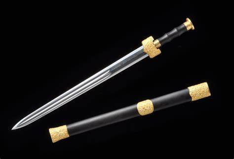
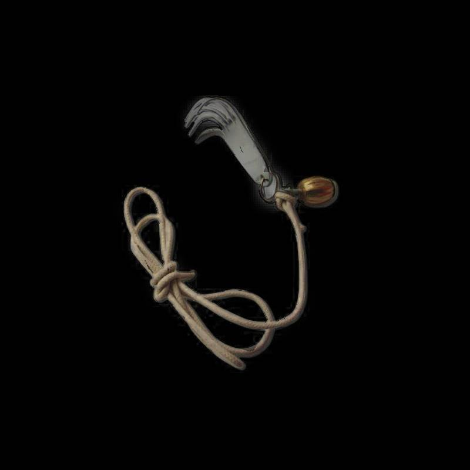

Armas Chinesas
Jian
O Jian, a Espada Reta Chinesa, é usada nas práticas do Kung Fu e do Tai Chi Chuan. É classificada como uma arma de tamanho médio, possuindo dois gumes, ponta aguda e construção simétrica. Esta elegante arma encanta pelo equilíbrio entre leveza, precisão e graciosidade nos movimentos.
Zhua
O Zhua, conhecido como "Mão de Ferro", foi utilizado na China imperial. Essa arma em formato de garra podia prender inimigos, arrancar escudos e até derrubar soldados de cavalos. Além disso, suas garras afiadas eram capazes de causar ferimentos extremamente graves.
O peso por si só já era letal, mas o design com garras o tornava ainda mais perigoso. Por isso, o Zhua se destaca como uma das armas mais bizarras e temidas da história chinesa.